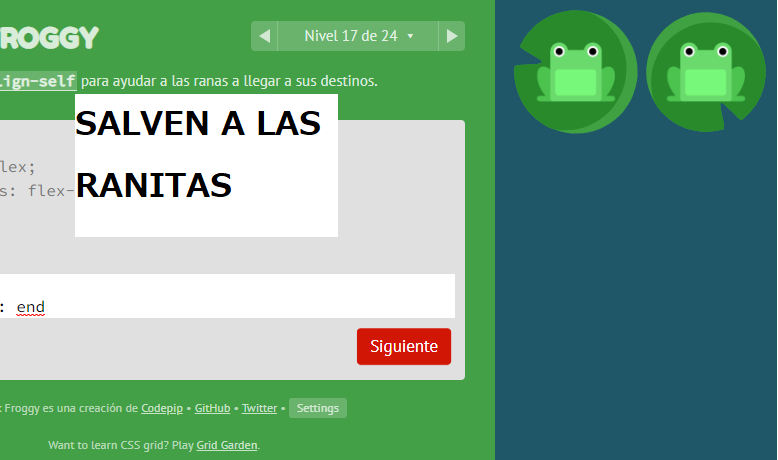
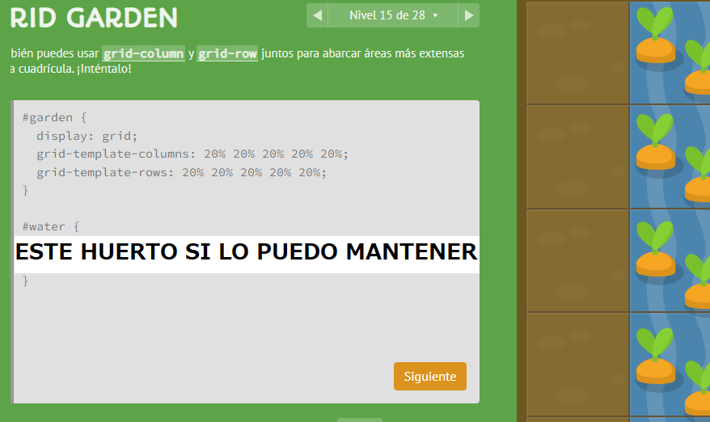

<div class="contInfo">
    <div class="wrap">
        <article class="card-blog">
            <h2>Github y subir mis proyectos </h2>
            <div class="catego">Github</div>
            <div class="imgContainer"></div>
            <p>Sabemos que al crear un proyecto en react o angular muchas veces queremos subir dicho trabajo a nuestro repositorio 
                de Github, pero ¿cómo lo hacemos y podemos desplegarlo en github pages?, veamos una manera de llevarla a cabo.
            </p>
        </article>
        <article class="card-blog">
            <h2>Plan de aprendizaje, desarrollo web</h2>
            <div class="catego">Personal</div>
            <div class="imgContainer"></div>
            <p>El desarrollo web se ha convertido en un sector muy grande en los ultimos años y al igual que la mayoria de 
                areas del desarrollo se ha incrementado la cantidad de saberes que necesitamos para emplearlo de manera optima,
                por eso te tengo un mapa o plan de aprendizaje para convertirte en un desarrolador frontend o backend.
            </p>
        </article>
        <article class="card-blog">
            <h2>Por que quise ser programador web</h2>
            <div class="catego">Personal</div>
            <div class="imgContainer"></div>
            <p>Decidir una carrera, profesion o a que dedicarle tiempo para aprender, ya sea por gusto o necesidad 
                no siempre es facil, pero encontrar aquello que te gusta y dedicarle el esfuerzo para lograrlo es igual 
                e incluso en ocasiones mas complicado, pero mi objetivo aqui es hablar un poco sobre mi experiencia 
                y por que mi deseo de desarrollarme como programador web.</p>
        </article>
        <article class="card-blog">
            <h2>Practica CSS Flexbox</h2>
            <div class="catego">CSS</div>
            <div class="imgContainer">
                
            </div>
            <p>Ya habiamos hablado anteriormente de CSS Grid garden, en esta ocasion les presento CSS Flexbox froggy 
                el objetivo es que las ranitas lleguen a las hojas, es bastante util para seguir practicando las bases de 
                flexbox, inluso puedes hacer un click sobre las propiedas en la pagina por si tienes dudas de que hace 
                cada una o no recuerdas como continua la sintaxis.
            </p>
            <p><a href="https://flexboxfroggy.com/#es" target="_blank">https://flexboxfroggy.com/#es</a></p>
        </article>
        <article class="card-blog">
            <h2>Practica CSS Grid</h2>
            <div class="catego">CSS</div>
            <div class="imgContainer">
                
            </div>
            <p>Por lo general cuando aprendemos algo nuevo la mejor manera de seguir recordando o si despues de un 
                tiempo relativamente largo no lo ocupamos mucho, es normal que comencemos a olvidar detalles del mismo, 
                por eso en este caso te presento una pagina para que puedas continuar practicando y puliendo tus skills 
                en CSS Grid.</p>
            <p><a href="https://cssgridgarden.com/#es" target="_blank">https://cssgridgarden.com/#es</a> 
                CSS Grid garden es una pagina a modo de juego donde tu objetivo es que las zanahorias consigan agua y sorten 
                obstaculos para que sigan creciendo</p>
        </article>

    </div>
    
</div>